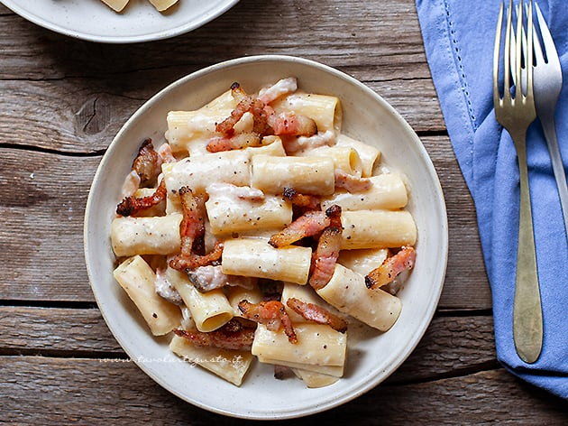

🏠 Return to Home
Alla Gricia

The First Born
From the mother came her eldest child. The Bernaise to Cacio e Pepe's Hollaindaise. An, arguably, improved version of its parent. Barring any dietary restrictions, everything is better with bacon guanciale.
Ingredients
- 250g Spaghetti
- 125g Pecorino Romano
- 187.5g Guanciale
- 7g fresh ground pepper
Instructions
- Slice guanciale into small cubes. Pro tip: toss it into your freezer for a bit resulting in a hardened fat which makes it easier to dice.
- Add guanciale into your pan, cooking it until your preferred crispiness.
- Remove guanciale and place it on a plate. Pour out any excess fat from the pan into a container.
- In a large pot, boil water and once it comes to a boil, salt the water (about 1 tbsp for every liter of water). See Cooking Tips.
- In a seperate mixing bowl, grate your Pecorino Romano then add the black pepper. Mix together.
- Once the pasta is cooked, transfer the pasta to a saucepan and turn on the heat to low. Don't worry about the excess water clinging on the spaghetti. In fact, you want this as this will add starch to your sauce making it extra creamy.
- Add the cheese and pepper into the saucepan, continously stirring over to low heat. Add pasta water by the tablespoon until the sauce has your preferred consistency.
- Set aside a few pieces of guanciale (for garnish) before adding the rest the rest into your pasta. Toss a few times. I like to add a tbsp of the oil set aside earlier for extra flavor.
- Plate your pasta, add pepper to taste and top with more grated Pecorino. Garnish with the extra pieces of guanciale.